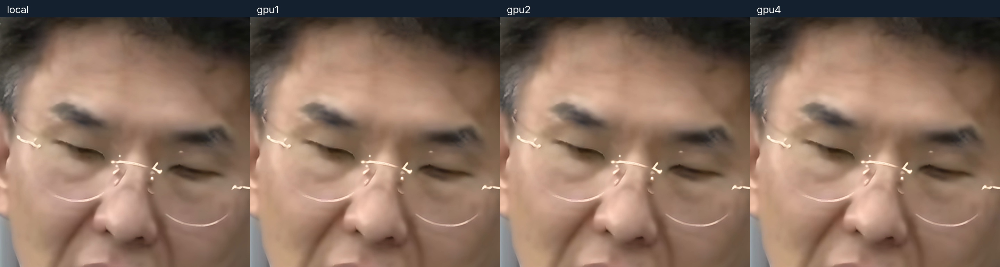

로컬 제작
APPLE MPS + METAL같은 위탁 공정의 로컬 실행25분 40.05초임대료 $0 · 전력 미측정비교 기준 · 실패·복구 포함
순수 처리 25분 11.55초
공통 자산 준비·회수 후 검수 제외
순수 처리 25분 11.55초
공통 자산 준비·회수 후 검수 제외
51.93초 · 4K · 30fps
시민어록 v46 · 훅 + 일러스트 해설 + 완결 본문
이미지 생성·일러스트 보정·TTS·소재·자막 준비는 공통으로 한 번 수행했습니다. 기존 지시→납품에는 이 준비 구간 35분 28.16초가 모두 들어갔습니다. 전체가 이미지 생성시간이라는 뜻은 아닙니다.
| 측정 범위 | 로컬 | 1대 | 2대 | 4대 |
|---|---|---|---|---|
| 전송 시작 → 최종 회수¹ | 25분 40.05초 | 9분 46.84초 | 16분 11.20초 | 37분 39.92초 |
| 같은 로컬 공정 대비 | 기준 | 61.9% 단축 | 36.9% 단축 | 46.7% 더 소요 |
| ESRGAN·피부·렌더 순수 처리² | 25분 11.55초 | 7분 41.44초 | 6분 08.49초 | 2분 30.20초 |
| 순수 처리시간 절감률 | 기준 | 69.5% 단축 | 75.6% 단축 | 90.1% 단축 |
위 표의 4대 37분 39.92초는 앞선 실패·복구 대기를 포함한 이번 실측 전체입니다. 마지막 4대는 입력 전송→회수 6분 00.92초, 새 서버 임대 준비까지 포함하면 7분 25.71초였습니다. 마지막 실행 지출 $0.180, 앞선 실패 $0.935, 총 $1.115를 구분합니다.
¹ 원격은 첫 input.tar 전송 직전부터 최종 파일 회수·규격 확인까지, 로컬은 같은 ESRGAN·피부 보정·최종 합성 실행 시작부터 파일 확인까지입니다. 첫 전송 이전 임대 준비와 회수 이후 AGY 검수는 제외합니다. 첫 전송 이후 발생한 실패·진단·재임대·대기는 포함합니다. 로컬에는 네트워크 전송이 없습니다.
² 가장 느린 조각의 순수 처리 + 최종 렌더. 전송·회수·실행 시작·검증은 제외한 계산시간입니다. 2대는 처리 조각을 보존하고 교체 서버 1대에서 최종 렌더를 복구했으므로, 마지막 복구만 전체 2대 제작시간으로 표시하지 않습니다.
| 겹치지 않게 나눈 경과 구간 | 1대 전체 | 2대 복구 포함 | 4대 마지막 정상 실행 |
|---|---|---|---|
| 입력 전송·압축 해제·전체 서버 준비 대기 | 0분 16.52초 | 0분 31.33초 | 1분 50.07초 |
| ESRGAN·피부 보정 실행 명령 | 6분 38.80초 | 5분 04.41초 | 2분 02.01초 |
| 조각 회수·재전송·복구 대기 | 0분 23.70초 | 7분 08.35초 | 0분 32.34초 |
| 최종 렌더 실행·규격 확인 | 1분 38.57초 | 1분 38.68초 | 1분 04.74초 |
| 최종 포장·다운로드·파일 확인 | 0분 49.25초 | 1분 48.42초 | 0분 31.76초 |
| 위 단계 합계 | 9분 46.84초 | 16분 11.20초 | 6분 00.92초 |
전송 구간에는 압축 해제·파일 확인·다른 서버 준비 대기가 포함됩니다. 네트워크만의 초 수는 따로 계측하지 않았습니다. 동시에 진행한 서버별 시간을 더하지 않았습니다. 2대의 조각·복구 구간에는 전송 실패, 진단 대기, 교체 서버 준비와 캐시 재전송이 포함됩니다. 4대의 첫 실패 전송부터 마지막 정상 전송까지 31분 39.00초는 마지막 정상 실행 표와 별도입니다.
기존 영상·측정 로그를 재사용했습니다. 추가 임대 0대 · 영상 재렌더 0회. 아래 기존 지시→납품 기록은 이 표와 다른 범위이며 원자료 그대로 보존했습니다.
공통 준비부터 최초 화면 검수까지 포함한 실제 경과시간입니다. 최종 혼합 음성의 청취 판정은 API 과부하로 미확인입니다.
공통 준비 35분 28.16초 포함. 지시 시각은 대화 원문에서 확인한 2026.10.24 11:53:58.058 KST입니다.
준비 실패·기다림·전송 복구·최종 회수까지 Vast 원장 표시액을 모두 합산했습니다. 공통 Speechmatics 전사 비용은 건별 확인되지 않아 별도 미확정이며, 무료 TTS·기존 이미지 구독·전력 비용을 원격 임대료와 합치지 않았습니다. 원장 표시값 $0.000은 반올림된 값일 수 있어 무료 사용을 뜻하지 않습니다.
이번 a034만 집계했습니다. 이전 a033·9초 시험, 충전액, 환율·카드수수료, 로컬 전력비와 구분합니다. 미집계 0건.
네 완성본 최초 AGY 화면 검수 통과. 최종 AAC 음성 패킷은 네 조건이 정확히 같고 실측 −14.1 LUFS / −1.5 dBTP입니다. 원음·TTS는 사전 실제 청취했지만 최종 혼합 음성 청취 API는 503으로 완료되지 않았습니다.
모델·해상도·FPS·자막·효과·음성 동일. MPS/CUDA의 산술과 인코딩 차이는 실제 표본으로 비교했습니다.
측정 범위는 각 제작 실행기와 자식 프로세스입니다. 공통 기획·소재·QA·보고서·재생 및 Mac 전체 전력/발열은 포함하지 않습니다.
작업 인스턴스 0개 · 별도 볼륨 0개 남음. 결과 회수 후 Stop이 아닌 Destroy로 종료했습니다.
계산이 겹친 구간: 2대 222.04초, 4대 103.97초.
같은 RTX 4090이어도 CPU·회선·준비 상태가 달라, 대수만의 순수 효과로 일반화할 수 없습니다.
| 측정 항목 | 로컬 | 1대 | 2대 | 4대 |
|---|---|---|---|---|
| 완주 지시 → 파일 납품¹ | 64분 42.17초 | 57분 58.77초 | 60분 46.63초 | 78분 10.19초 |
| 완주 지시 → 회수·규격 확인 | 61분 08.20초 | 46분 31.66초 | 52분 54.77초 | 75분 46.82초 |
| 조건 실행 시작 → 회수 | 25분 40.05초 | 10분 40.96초 | 17분 05.56초 | 39분 55.96초 |
| ESRGAN + 피부 효과² | 22분 24.18초 | 6분 33.67초 | 5분 00.54초 | 1분 58.09초 |
| 최종 4K 렌더 | 2분 47.37초 | 1분 07.77초 | 1분 07.96초 | 0분 32.11초 |
| 순수 처리 합계² | 25분 11.55초 | 7분 41.44초 | 6분 08.49초 | 2분 30.20초 |
| 로컬 CPU 누적 사용시간 | 922.38초 | 33.61초 | 44.70초 | 136.56초 |
| 최대 작업 메모리 RSS | 2061.4 MiB | 113.0 MiB | 105.2 MiB | 108.4 MiB |
| 이번 임대 지출 | $0.000 | $0.237 | $0.401 | $1.115 |
¹ 공통 완주 지시부터 각 완성 파일 회수·규격 확인·최초 화면 검수 완료까지의 실제 경과시간입니다. 보고서 공개는 뒤따르는 공통 단계입니다. 같은 출발점을 쓰며 오류·대기 시간을 빼지 않았습니다. 최초 소재 요청부터의 전체 경과는 751분 43.82초이며, 중간 사용자 확인·기존 보고서 게시 작업도 포함된 값입니다.
² 가장 느린 조각의 처리시간과 최종 렌더의 합. 준비·모델 로딩·전송·회수·검수와 별도이며, 이를 지시→납품으로 부르지 않습니다. 일러스트 ESRGAN·음성·편집 준비는 공통으로 한 번 만들고 네 조건에 동일하게 적용했습니다.
4대 조건의 앞선 준비 실패·재고 소진 14개 인스턴스에 $0.935가 표시됐습니다. 동일한 시간당 가격 네 대가 아니며, GPU 대수에 비례해 준비 대기료도 누적됐습니다. 실제 GPU 과금 시간 합계는 1대 14.64분, 2대 27.66분, 4대 100.38분입니다. 2대는 계산 결과를 재사용해 렌더만 복구했습니다. 마지막 4대 성공 실행만의 표시 지출은 $0.180이고 앞선 실패·재고 소진은 $0.935입니다. 전체 4대 비용의 약 83.9%가 앞선 실행에서 발생했습니다. 단, 단계별 비용을 분리 청구한 값은 아닙니다.
GPU·디스크·양방향 전송 청구를 합산했습니다. 준비 중인 서버도 과금되므로 단가가 낮아도 여러 대의 대기 시간이 누적되면 비싸질 수 있습니다. 단계별 청구액은 제공되지 않아 임의로 배분하지 않았습니다.
1대 약 18.3분, 69.5% 단축 / 2대 약 14.6분, 75.6% 단축 / 4대 약 6.0분, 90.1% 단축
실제 1시간 영상을 만든 값이 아닌, 이번 순수 처리 비율의 계산 예시입니다. 공통 준비·대기·전송·검수는 별도라 실제 납품 시간을 보장하지 않습니다.

AGY는 같은 시각의 원본 해상도 얼굴 확대에서 로컬·1대·2대·4대의 얼굴 형태, 안경 위치, 피부 평활화, 명암과 선명도에 알아볼 만한 차이를 찾지 못했습니다. 특정 조건을 더 좋다고 고르지 않았습니다. 이는 한 프레임의 얼굴 영역 비교이며, 전체 1,558프레임의 모든 자막·배경·움직임이 동일함을 증명한 결과는 아닙니다.
수치 유사성만으로 화질 합격을 판정하지 않았습니다. 실제 시각 판정과 기술 검사를 구분해 기록했습니다.
10577은 SSH 실행 파일이 없어 접속 자체가 불가능했습니다. 49553은 패키지 다운로드가 300초 상한을 넘었습니다. 둘 다 실패 비용을 보존하고 삭제했습니다. GPU 이름·Verified만으로 준비 속도를 보장하지 않습니다.
2대 ESRGAN은 완료했지만 조각 전송의 90초 제한에서 실패했습니다. 로컬 회수 캐시를 보존하고 전송 한도를 240초로 바꾼 뒤 렌더만 복구했습니다. ESRGAN을 중복 계산하지 않았습니다.
4대 조건은 세 번의 설치 실패와 재고 소진 후 다른 조합으로 완주했습니다. 앞선 실패·진단 대기·새 준비를 포함한 납품 시간과 성공 실행 시간, 순수 계산시간을 따로 표시했습니다.
마지막 4대는 로컬에서 받은 고정 버전 wheel과 FFmpeg 6.1.1을 전송해 원격 apt/pip 다운로드를 없앴습니다. 이전 1·2대의 Ubuntu FFmpeg 4.4와 빌드가 다르므로 완전히 통제된 대수 실험은 아닙니다. 편집 구성·모델·인코딩 설정은 유지하고 실제 출력으로 검수했습니다.
두 제안이 no_such_ask로 거절되어 이미 확보한 두 서버를 삭제했습니다. 거절된 같은 제안을 재제출하지 않고 재고를 갱신해 서로 다른 예비 후보를 두었습니다. 이 과정의 실제 지출과 대기 역시 4대 조건에 포함합니다.
먼저 전체 프레임을 인코딩한 다음 공통 AAC를 결합했습니다. 네 조건의 AAC 패킷 동일성을 코드로 확인했습니다. 청취 API 503을 음향 합격으로 바꾸지 않았으며, OS가 추정한 audio/x-flac 대신 공급자 문서의 audio/flac를 사용해도 과부하가 지속됐습니다.
조각과 최종본을 회수한 서버부터 삭제했습니다. 실패 서버도 삭제했으며 마지막 인스턴스·별도 볼륨 조회를 남겼습니다. 다른 세션의 자원은 삭제하지 않았습니다.
실측 처리율·모델·프레임 수·당시 단가를 전역 장부에 저장합니다. 다음 사용은 현재 Verified·신뢰도·호환·재고를 다시 통과하고 준비·처리·회수·전송 비용을 비교합니다.
선별한 실행 코드·공개 모델·해당 미디어·폰트만 허용 목록으로 보냈습니다. API 키·SSH 개인키·환경 파일·쿠키·NAS 인증정보는 전송하지 않았습니다.
1대 실행기의 시작→정리 완료는 10분 44.89초이나 원장 GPU 항목은 0.244시간(14.64분)으로 표시됩니다. 이 차이의 원인은 확인되지 않아 최소 과금·준비비·시간 반올림 등으로 추정하지 않았습니다. 보고서는 실행 시간과 공급자 표시 과금을 각각 보존했습니다.
| 조건 | 인스턴스 | machine | 합산 단가 | 표시 지출 | 종료 |
|---|---|---|---|---|---|
| gpu1 | 57459763 | 10673 | $0.943/h | $0.237 | 삭제 확인 |
| gpu2 | 57459758 | 10914 | $0.943/h | $0.156 | 삭제 확인 |
| gpu2 | 57459768 | 126552 | $0.554/h | $0.099 | 삭제 확인 |
| gpu2 | 57460827 | 10673 | $0.943/h | $0.146 | 삭제 확인 |
| gpu4 | 57459765 | 21899 | $0.494/h | $0.067 | 삭제 확인 |
| gpu4 | 57459774 | 10577 | $0.554/h | $0.085 | 삭제 확인 |
| gpu4 | 57459779 | 137610 | $0.665/h | $0.089 | 삭제 확인 |
| gpu4 | 57459786 | 49553 | $0.759/h | $0.101 | 삭제 확인 |
| gpu4 | 57460839 | 49553 | $0.759/h | $0.112 | 삭제 확인 |
| gpu4 | 57460847 | 21899 | $0.494/h | $0.075 | 삭제 확인 |
| gpu4 | 57460854 | 137610 | $0.665/h | $0.100 | 삭제 확인 |
| gpu4 | 57460864 | 55957 | $0.890/h | $0.135 | 삭제 확인 |
| gpu4 | 57461748 | 55957 | $0.890/h | $0.061 | 삭제 확인 |
| gpu4 | 57461755 | 23579 | $0.612/h | $0.040 | 삭제 확인 |
| gpu4 | 57461761 | 21899 | $0.494/h | $0.030 | 삭제 확인 |
| gpu4 | 57461768 | 11851 | $0.566/h | $0.039 | 삭제 확인 |
| gpu4 | 57462496 | 55957 | $0.890/h | $0.001 | 삭제 확인 |
| gpu4 | 57462518 | 23579 | $0.612/h | $0.000 | 삭제 확인 |
| gpu4 | 57462744 | 151444 | $0.490/h | $0.059 | 삭제 확인 |
| gpu4 | 57462760 | 150714 | $0.517/h | $0.042 | 삭제 확인 |
| gpu4 | 57462773 | 137160 | $0.547/h | $0.043 | 삭제 확인 |
| gpu4 | 57462784 | 63452 | $0.606/h | $0.036 | 삭제 확인 |
청구 조회 2026-10-24T13:10:03.886615+09:00. 공급자 원장 표시 정밀도와 반영 지연이 있으며 미표시 비용을 0으로 확정하지 않습니다. 임대 시 합산 단가는 50GB 디스크 포함, 전송료 별도입니다.